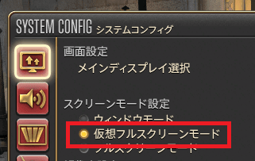
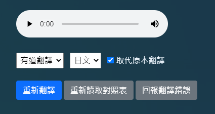

这程式安全吗
本程式不会修改FF14游戏档案，且翻译文字皆使用API请求的方式取得，请放心使用。名词没有被正确翻译
本程式只会修正 对照表 内纪录的词彙，若词彙不在对照表里将不会被程式修正，请等对照表更新或是使用【回报翻译错误】功能。视窗不透明
AMD和NVIDIA的广域设定的某些选项会影响视窗的透明度请将AMD和NVIDIA的【广域设定】恢復成预设值即可
翻译无法自动显示下一句
关闭NVIDIA的Shadowplay即可这程式能翻译什么语言
目前仅能翻译日文和英文版本的游戏主程式能与汉化一起使用吗
基本上可以，程式的【翻译设定】有略过汉化字幕的功能，但请注意本功能无法完美迴避已汉化字幕。如果游戏是日文，队伍频道是英文，该如何设定
至【设定】>【翻译设定】>将【游戏语言】设定成日文，【队伍频道】设定成英文即可。翻译视窗无法维持在最上层
请将FF14的显示设定改成「无边框全萤幕 / Borderless Window / ボーダレスウィンドウ」。
每一句都要手动选取翻译吗
不需要 ，一般对话和过场动画都会自动翻译，不能自动翻译的部分也能使用【翻译萤幕文字】功能来翻译。无法下载翻译对照表
若使用加速器或VPN时无法存取Github，请至Tataru Assistant的【设定(齿轮按钮)】>【系统设定】将SSL验证关闭。出现翻译失败的错误讯息
若使用加速器或VPN时无法翻译字幕，请至Tataru Assistant的【设定(齿轮按钮)】>【系统设定】将SSL验证关闭。启动后显示「这个作业系统不支援 .NET Framework 4.8」的讯息
请安装 Microsoft .NET Framework 4.8程式无法自动翻译
- 请安装 Microsoft .NET Framework 4.8
- 至【设定】>【系统设定】，点选【修復字幕读取器】，修復后重新开机即可
-
若无法修復请在左下搜寻输入「cmd」，找到「命令提示字元」对其滑鼠右键，点选「以系统管理员身分执行」，然后执行以下指令
secedit /configure /cfg %windir%\inf\defltbase.inf /db defltbase.sdb /verbose
如何翻译对话选项和介面文字
详见【翻译萤幕画面上的文字】说明页如何重新翻译
滑鼠点选程式的翻译文字，再点选弹出视窗里的【重新翻译】按钮即可
哪个翻译引擎比较好
推荐使用免费流量较多的【Gemini】，其次为【ChatGPT】和【Cohere】，非AI翻译器的翻译品质较差不建议使用要等很久才会显示翻译
本应用程式是使用API请求翻译， 因此翻译速度取决于使用者的网路环境和API伺服器的状况翻译时跳出错误讯息
表示该翻译方式目前无法连线，或是已经达到流量限制，只能等待解除限制，或是暂时使用别的翻译方式如何移动视窗
按住左上的 按钮即可移动视窗
按钮即可移动视窗